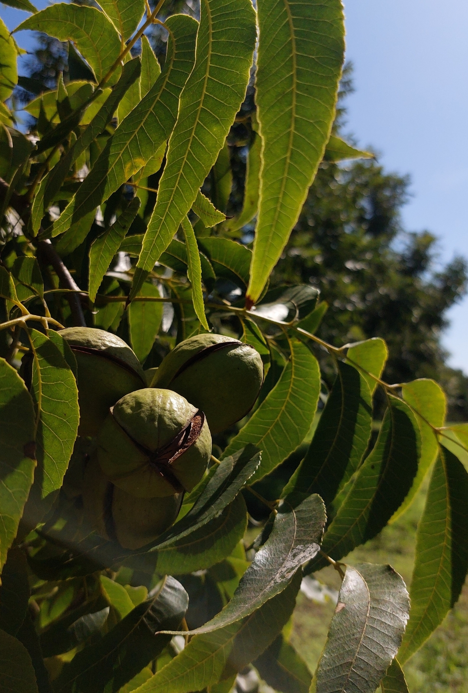
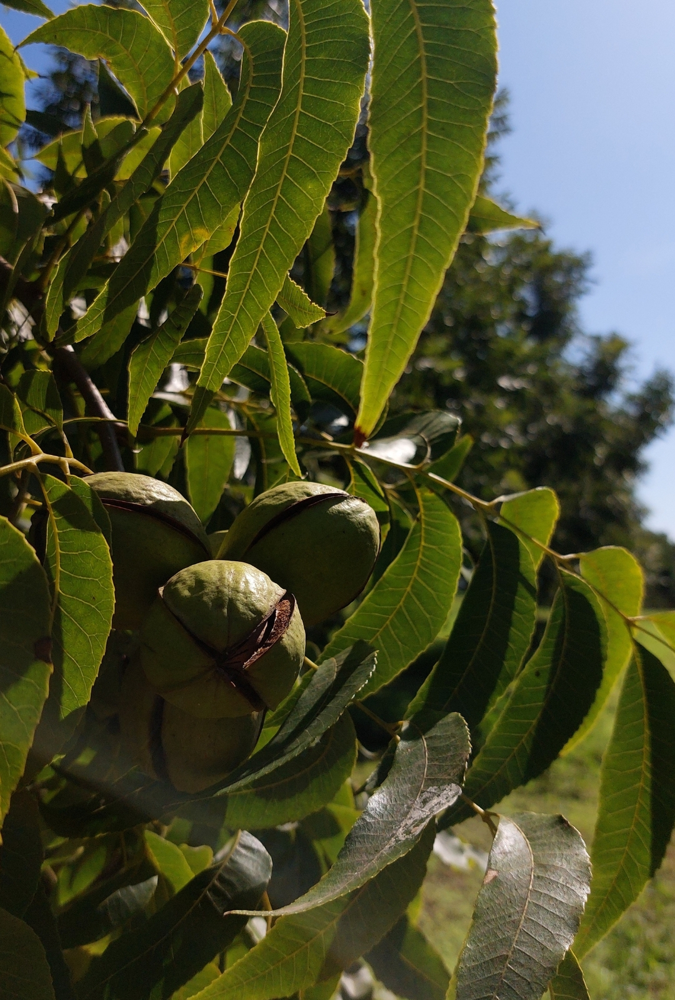

Pecanes Don Julián es una empresa de origen familiar dedicada a la producción y comercialización de nueces pecán, ubicada en la región centro de la provincia de Santa Fe, Argentina.
El proyecto nació con el propósito de desarrollar una actividad sustentable, en armonía con la naturaleza y el entorno rural, ofreciendo un producto de alta calidad con valor agregado local.
La primera plantación se realizó en el año 2014, incorporando nuevas plantas en 2015 y 2016, consolidando así un monte productivo que hoy refleja años de trabajo, paciencia y compromiso.
Así nació Pecanes Don Julián, un emprendimiento familiar que hoy produce nueces pecán de alta calidad, vendidas a granel y también transformadas en deliciosas nueces caramelizadas y choco nuez.
Pero más allá del producto, lo que realmente nos mueve es la convicción de que sí se puede producir de otra manera: respetando los ciclos naturales, cuidando el suelo, y dejando un legado verde para quienes vengan después.

 

Nuestro logo es mucho más que una identidad gráfica; es un mapa de nuestros afectos y un tributo a lo que
verdaderamente importa. Nació de la misma tierra que trabajamos, inspirado por la fuerza que impulsa cada
una de nuestras jornadas: la familia.
En el centro, erguida y vital, se alza la planta de pecán. De su tallo firme brotan cinco frutos, ni uno
más, ni uno menos. Cada una de estas nueces representa a cada uno de los hijos de Don Julián. Son la cosecha
más noble de su vida, diferentes entre sí, pero unidos por un mismo origen y nutridos por los mismos valores
de esfuerzo y honestidad. Crecen hacia arriba, buscando el sol, tal como él les enseñó.
Rodeando esta escena, un círculo trazado en cálidos tonos tierra los envuelve. No es un trazo cerrado ni
rígido; es un abrazo. Este círculo simboliza a la familia como un todo: el refugio que protege sin limitar
el crecimiento, la contención necesaria en los tiempos difíciles y la unidad que perdura a pesar del tiempo
y la distancia.
Cuando ves el sello de Don Julián Pecanes, no solo estás viendo una marca de calidad en manufactura local;
estás viendo la promesa de un padre y el corazón de una familia que pone, en cada nuez que llega a tu mesa,
el mismo amor con el que cuida a los suyos.
Porque creemos que cada nogal plantado es una promesa:
la promesa de un futuro más consciente, más sustentable y más humano.